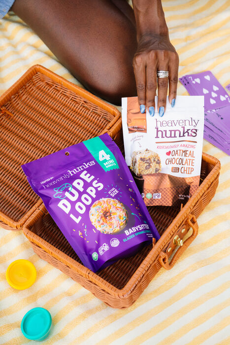
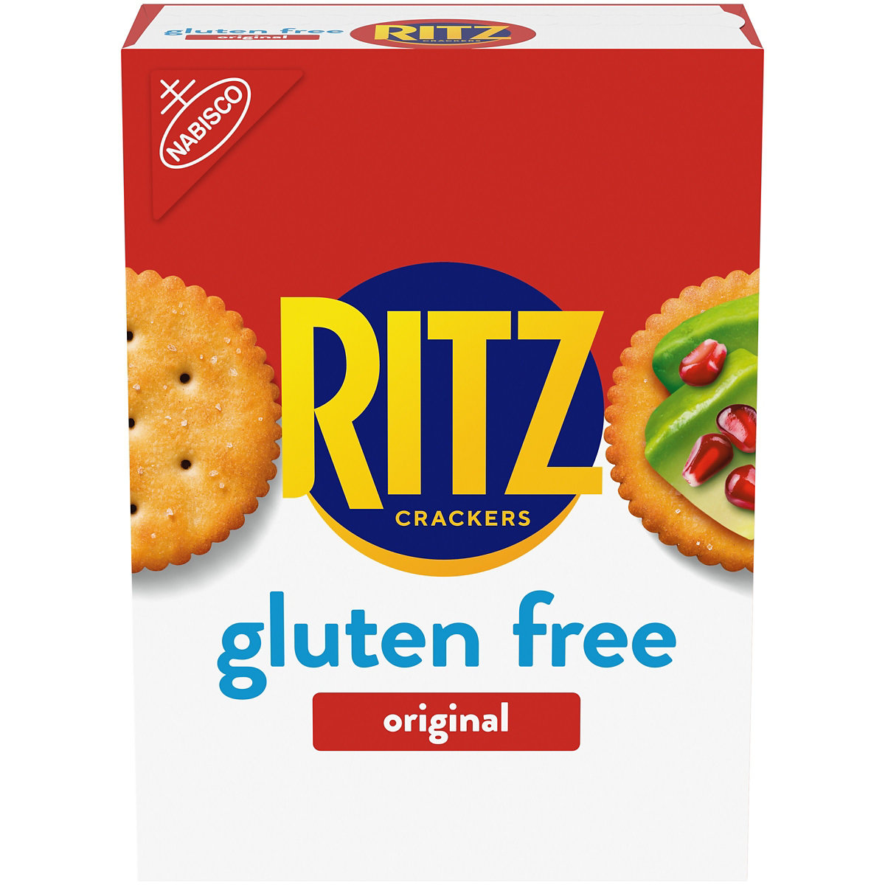
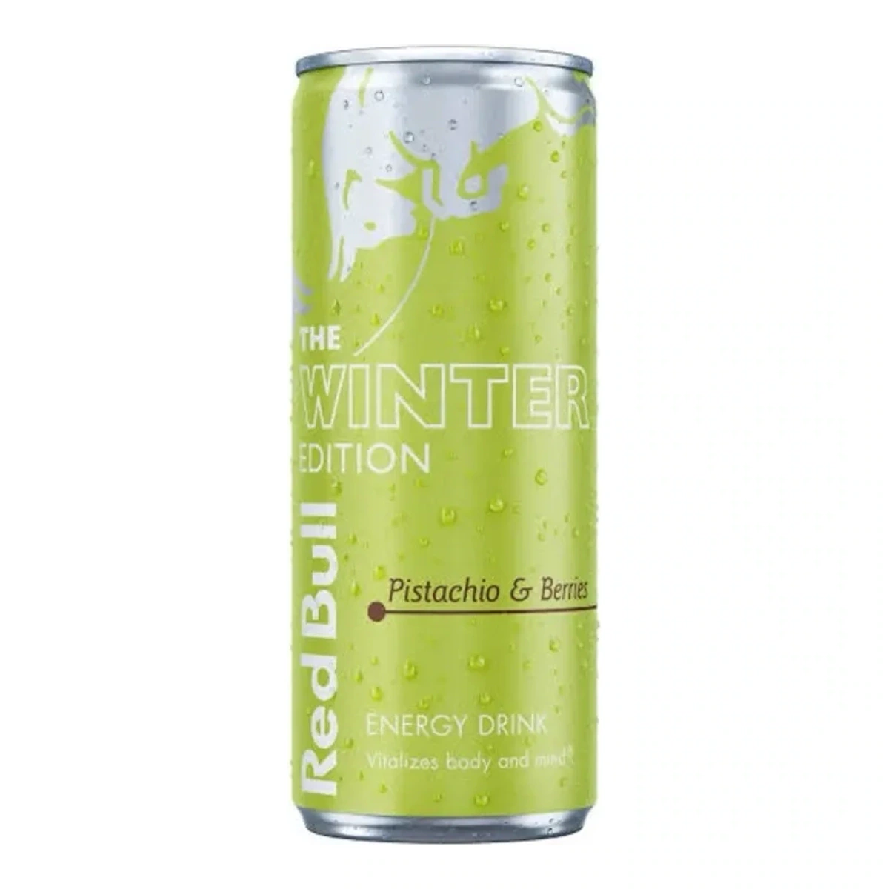
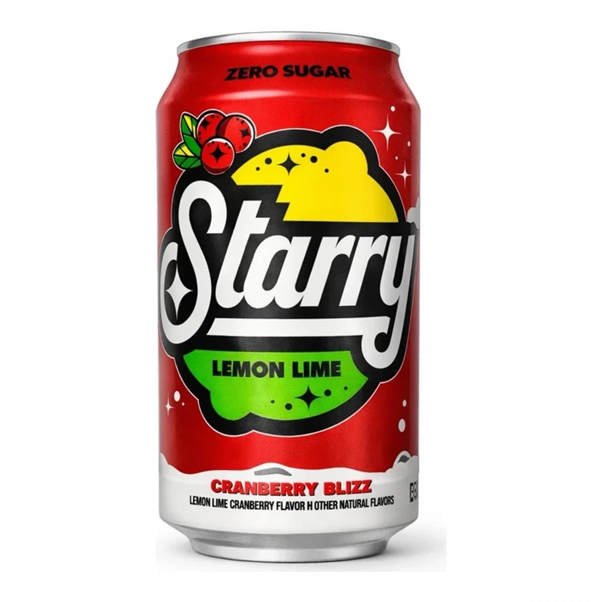
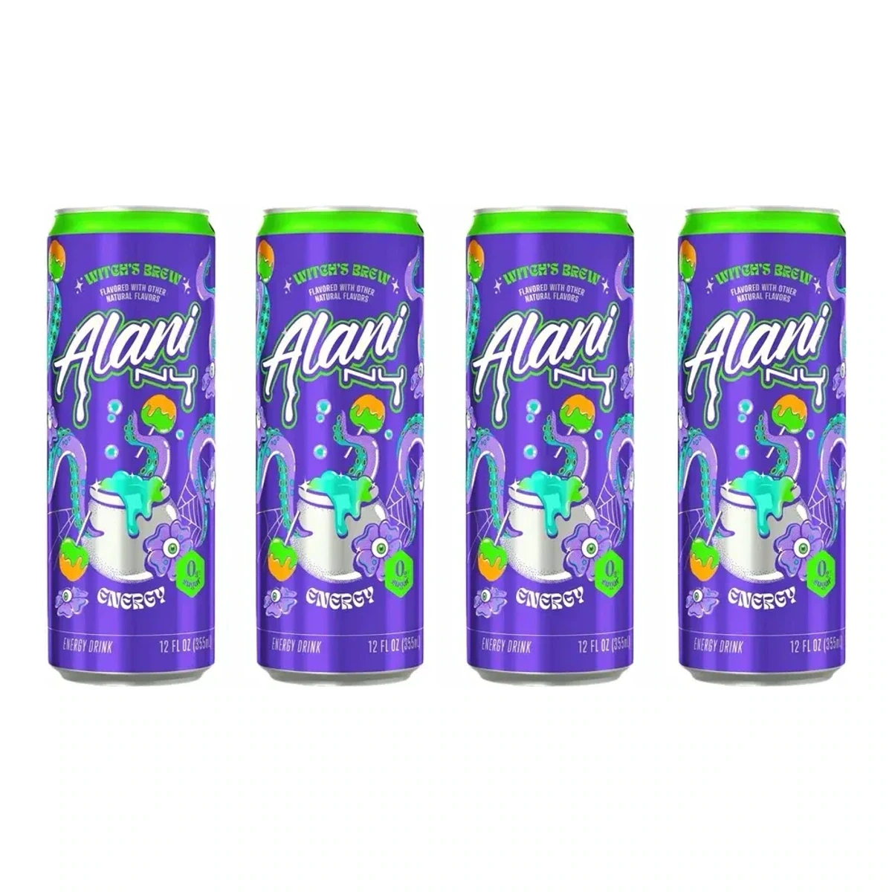
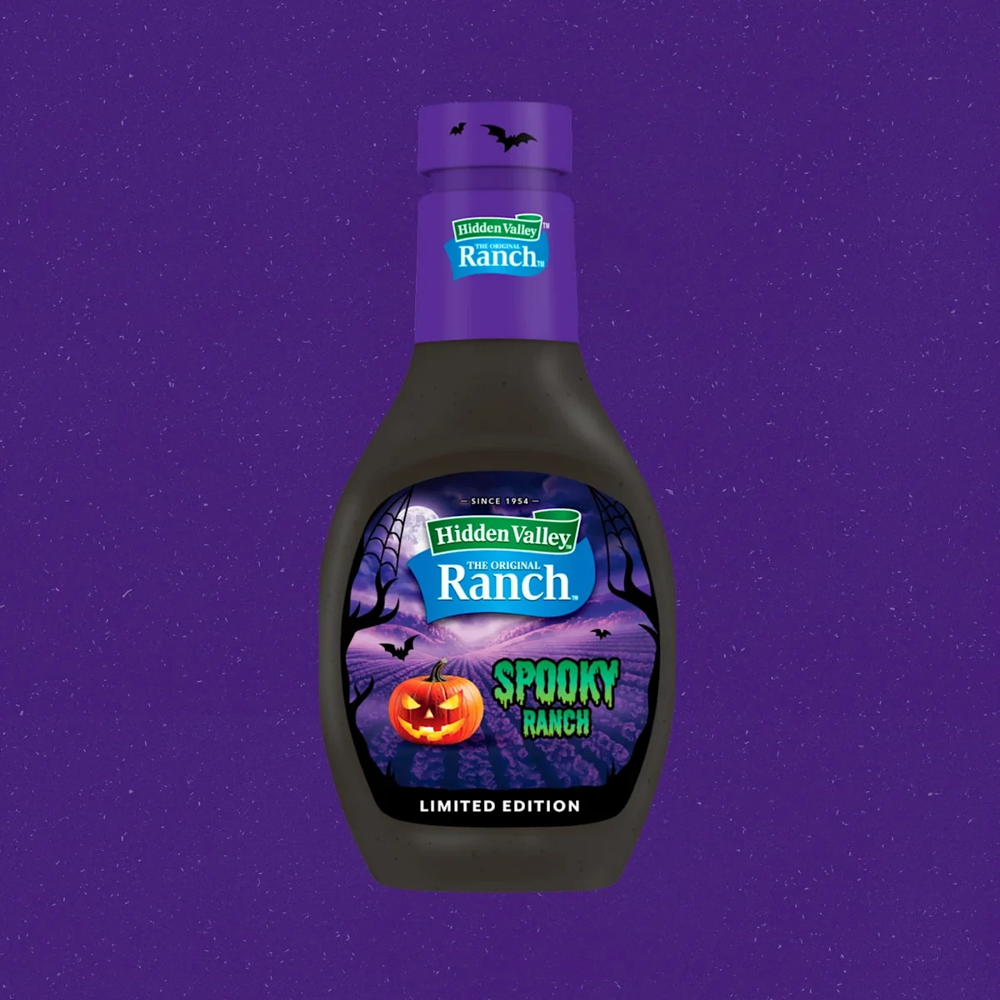

Dupe Loops adds Sprouts and a different Costco bag.
Check the bag before comparing the new retailer offers.
2 min read
What is new. What is gone. What is coming back.
Search is temporarily unavailable. You can still browse every article using the page links below.
7-12 of 88 articles

Check the bag before comparing the new retailer offers.

The new box has arrived, but the nationwide expansion is still ahead.

The new Winter Edition is official. Separate the flavor announcement from can size, sugar designation and seller-specific stock.

The 2026 regional schedule is confirmed. Here is how to separate seasonal retail stock from an older single-can listing.

12 oz or 8.4 oz? Compare the two seasonal cans, caffeine per can and what a four-pack actually contains.

Black ranch, a glowing label and a Walmart-only Halloween window. Separate the packaging novelty from the flavor and stock claims.